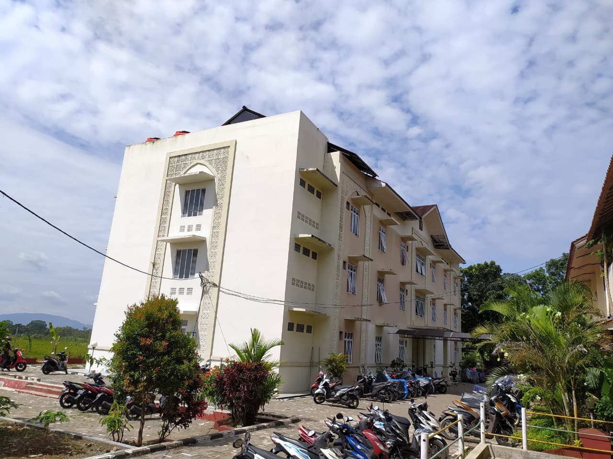
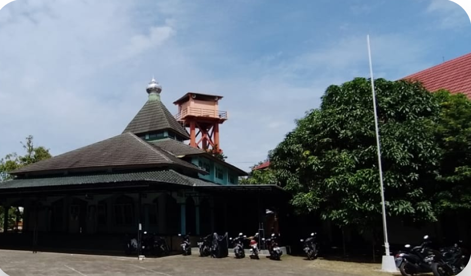
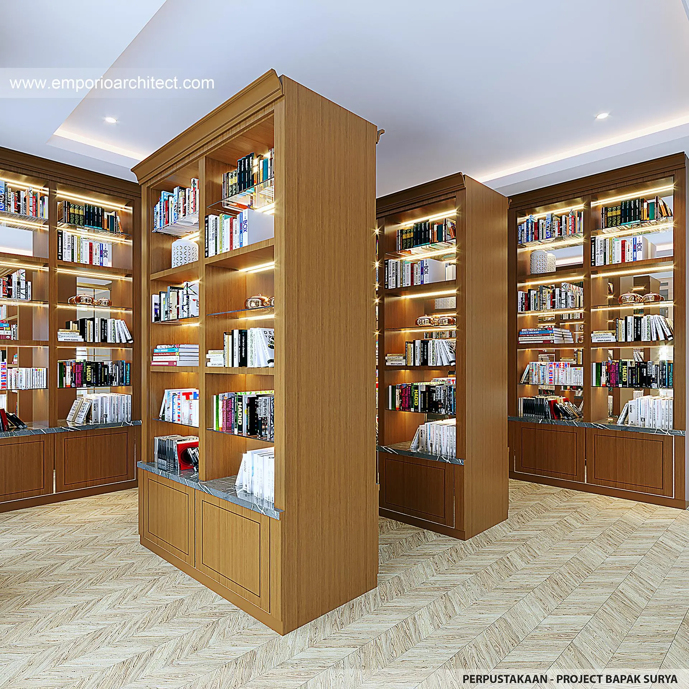
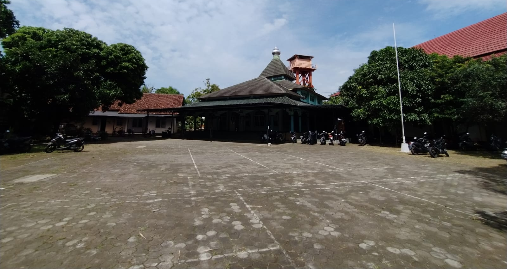
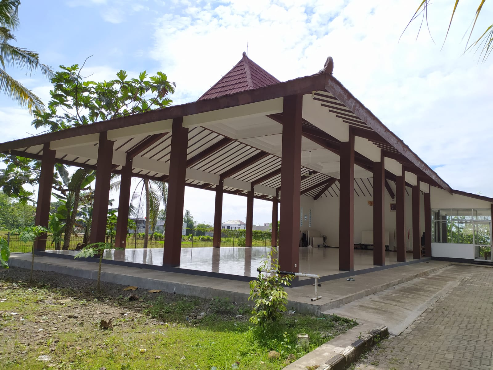

Fasilitas
Fasilitas Modern Penunjang Pembelajaran
Lingkungan belajar yang nyaman dengan fasilitas lengkap untuk menunjang perkembangan akademik dan karakter santri.

Asrama Nyaman
Asrama bersih, nyaman dan aman selama 24 jam.

Masjid
Pusat ibadah sekaligus kegiatan keilmuan santri.

Perpustakaan
Ribuan koleksi kitab dan buku pendidikan.

Laboratorium
Laboratorium komputer dan multimedia modern.

Lapangan Olahraga
Lapangan futsal, basket, dan voli untuk kegiatan ekstrakurikuler.

Pendopo Dr. KH. Chariri Shofa, M. Ag
Tempat pertemuan dan kegiatan keilmuan santri.